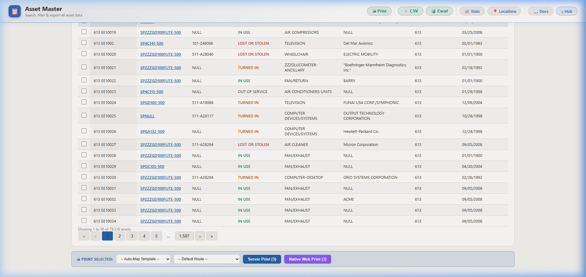
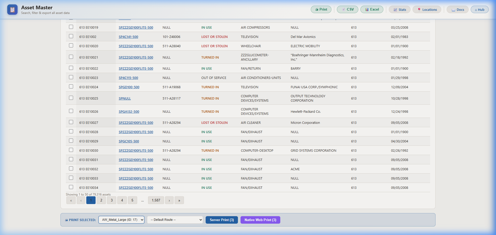
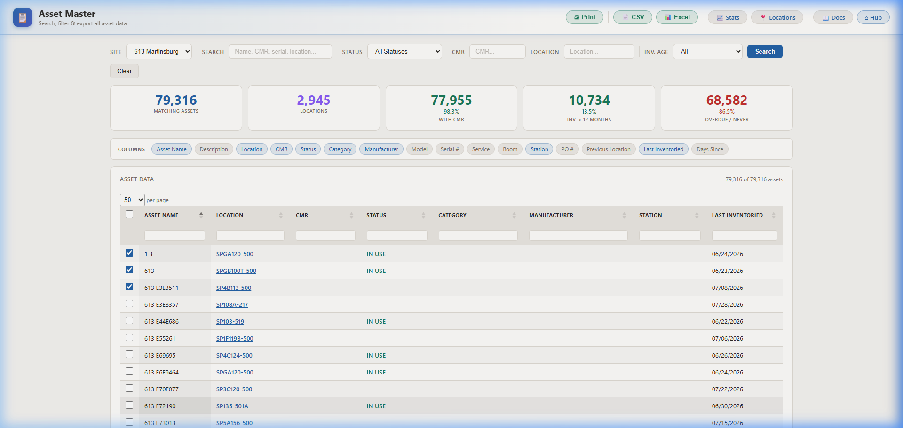
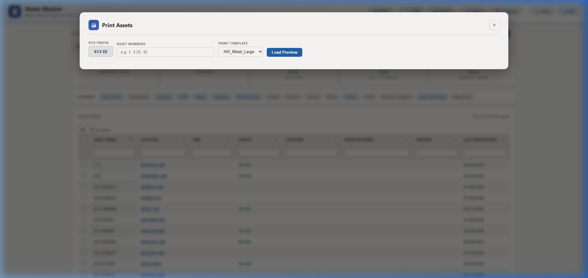

🖨 Printing Guide: Asset Master
Step-by-step walkthrough for printing RFID labels from Asset Master. Covers both print methods: sequential range printing and selected-row server printing.
Two ways to print: Asset Master provides two distinct print methods for different use cases. This guide covers both in detail.
📋 This Guide Covers
- Common Steps
- ■ Method A: Server Print (Selected Rows)
- Select checkboxes → Choose template at bottom → Server Print
- ■ Method B: Print Dialog (Sequential Ranges)
- Click Print button at top → Enter asset number ranges → Load Preview
Common Steps (Both Methods)
1 Sign In to iDash
Open your web browser and navigate to the iDash portal URL (e.g.
http://your-server/iDash/).
Enter your iDash username and password, then click Sign In.

The iDash login screen — enter your credentials and click Sign In
2 Navigate to Asset Master
From the Hub dashboard, find the Asset Master — Unified Portal tile in your Favorites or under the 📊 Reports category tab. Click the tile to open the application.

The Favorites category showing the Asset Master tile
3 Search & Filter Assets
The Asset Master page loads with all assets for your selected site. Use the toolbar filters to narrow down which assets you need:
- Site — Select which VA station's assets to view
- Search — Type an asset name, CMR, serial number, or location
- Status — Filter by IN USE, INACTIVE, OUT OF SERVICE, etc.
- CMR / Location — Filter by specific CMR number or building location
- Inv. Age — Filter by inventory recency

Asset Master showing 79,405 assets with KPI summary cards, column toggles, and the filterable data grid
💡 Tip: The KPI cards at the top give a quick overview: total assets, locations, CMR coverage %, inventory age. Click column headers to sort.
■ Method A: Server Print (Selected Rows)
Use this when: You want to print labels for specific assets you've picked from the grid.
Select rows using checkboxes, choose a template at the bottom of the page, and click Server Print.
A1 Select Rows to Print
Check the boxes next to the assets you want to print labels for:
- Click individual row checkboxes to select specific assets
- Click the header checkbox to select all visible rows on the page
- Use filters first, then select all to target a specific group

Four assets selected — checkboxes highlighted blue
A2 Scroll Down to Print Selected Bar
Scroll to the bottom of the page. Once you have rows selected, a
🖨 PRINT SELECTED toolbar appears at the bottom with:
- Template dropdown — Select the label template (or leave on Auto-Map Template to use the default for each asset's tag type)
- Route dropdown — Select the printer route (or leave on Default Route)
- Server Print (N) — Sends the selected rows to BarTender via MQTT for printing. The number in parentheses shows how many rows are selected.

The PRINT SELECTED bar at the bottom showing template/route dropdowns and Server Print (3) button
A3 Choose a Template & Click Server Print
Select your label template from the Template dropdown. Options include your configured BarTender templates (e.g.
AW_Metal_Large, AW_Std_Small).
Then click Server Print (N) to queue the label jobs via MQTT.

Template selected and Server Print button ready — click to queue 3 labels
💡 Tip: Auto-Map Template automatically picks the right template based on each asset's tag type. Use a specific template only if you want to override the default mapping.
■ Method B: Print Dialog (Sequential Asset Number Ranges)
Use this when: You want to print labels for a sequential range of assets by number
(e.g. "print labels for assets 1 through 50"). You don't need to select individual rows.
B1 Click the Print Button in the Header
At the top of the page, click the green 🖨 Print button in the header toolbar
(next to CSV, Excel, Stats, etc.). This opens the Print Assets dialog.

The Asset Master header bar — the green Print button is in the top-right
B2 Enter Asset Number Ranges
The Print Assets dialog appears with three fields:
- Site Prefix — Pre-filled with your station code (e.g.
613 EE). This is the prefix used when generating asset names. - Asset Numbers — Enter sequential asset numbers or ranges. Examples:
1, 3-25, 42— prints assets #1, #3 through #25, and #42100-200— prints all assets from #100 to #2005— prints only asset #5
- Print Template — Select the BarTender label template to use

The Print Assets dialog — enter asset number ranges and select a template
B3 Load Preview & Print
After entering your asset numbers and selecting a template:
- Click Load Preview to see a list of the assets that will be printed
- Verify the preview matches your expectations
- Click the print/submit button to queue the label jobs via MQTT
⚠ Note: This method uses the Site Prefix combined with the asset numbers to look up assets. For example, if your prefix is
613 EE and you enter 1-5, it will look for assets named 613 EE1 through 613 EE5.
🔄 Method A vs. Method B Comparison
| Feature | ■ Method A: Server Print | ■ Method B: Print Dialog |
|---|---|---|
| Best for | Printing specific assets you've found via search/filter | Printing a sequential range of assets by number |
| How you pick assets | Row checkboxes in the grid | Enter asset number ranges (e.g. 1-50) |
| Where it is | Bottom of the page (PRINT SELECTED bar) | Top header bar (green Print button) |
| Template selection | Dropdown in the bottom bar (supports Auto-Map) | Dropdown in the pop-up dialog |
| Printer routing | Route dropdown (supports Default Route) | Uses default route only |
| Preview | You see the selected rows in the grid | Load Preview button shows matching assets |
| Requires scrolling? | Yes — scroll to bottom after selecting rows | No — dialog opens over the page |
🔧 Troubleshooting
| Issue | Solution |
|---|---|
| Can't see the Asset Master tile | Ask your admin to add rpt_asset_master to your tile access |
| PRINT SELECTED bar not showing | Select at least one row using the checkboxes, then scroll to the bottom of the page |
| No templates in the dropdown | Templates are configured in Template Mapping Config |
| "Print Client not connected" | Start the MQTT print spooler. See MQTT Configuration |
| Print dialog shows wrong site prefix | Change the Site dropdown at the top of Asset Master first, then reopen Print |
| Load Preview shows no assets | The asset numbers you entered don't match any assets with that site prefix. Verify the numbering. |
| Too many assets in the grid | Use Search, Status, Location, or CMR filters to narrow results before selecting rows |